Proposal Oct 16, 2026 · Prepared by Errol Fernandes
StaffCRM Lite, working: a CRM sized for a five-person sales team
The proposal is now a clickable prototype. It covers every must-have in requirement brief, three Tier 1 dashboards, event calendar and admin controls for Scott and Stephen. This guide shows each screen and how to try it.
- Lead
- MQL
- SQL
- Opportunity
- Closed Won
- Closed Lost
Try it in five minutes
Follow these steps in order; each one shows a different person’s job.
- Sign in as ScottOpen the prototype, choose Scott, select Continue.
- Move a dealPipeline → change Finance transformation team to Opportunity. A follow-up task appears.
- Open an accountCompanies → Northstar Health. Read the AI summary, then log a note in the timeline.
- Work the queueMy tasks → Work my queue → Start. Pick a template and send.
- Switch to RyanSign out, choose Ryan, open Events. Select Preview this week’s email.
- Switch to DannyReports for the leadership dashboards, then Events → Budget & ROI.
- Back to Scott as adminSettings → Admin → Onboard user. The new person appears on the sign-in screen.
Screen by screen
Select any screenshot to open it full size. Each screen lists the requirement it answers.
Sign-in
EveryonePick a person to see StaffCRM Lite as they would. Each person gets their own pages and permissions.
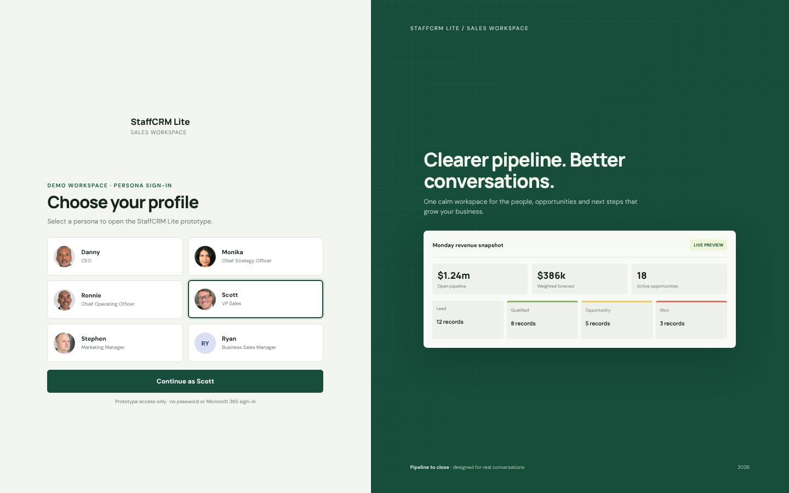
What it shows
- Danny (CEO), Monika (CSO), Ronnie (COO), Scott (VP Sales), Stephen (Marketing Manager), Ryan (Business Sales Manager)
- Anyone an admin onboards appears here; offboarded people disappear
Try this
- Choose Scott and select Continue as Scott
- Use Sign out (top right) to switch people
Overview
ScottThe week at a glance: weighted forecast, open deals, closed won this quarter and what is due today.
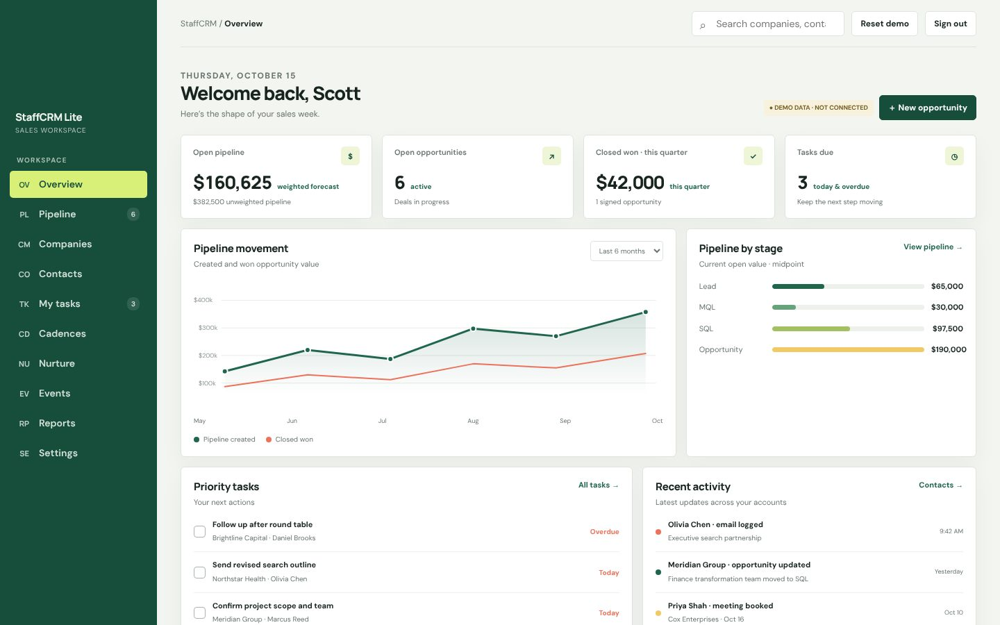
What it shows
- Weighted forecast and open pipeline at range midpoint
- Pipeline by stage, priority tasks with Overdue and Today flags
- Recent activity across accounts
Try this
- Tick a priority task to complete it
- Select View pipeline to jump to the board
Pipeline
ScottA kanban board from Lead to Closed Won and Closed Lost. Every stage change stamps a date and creates the next task.
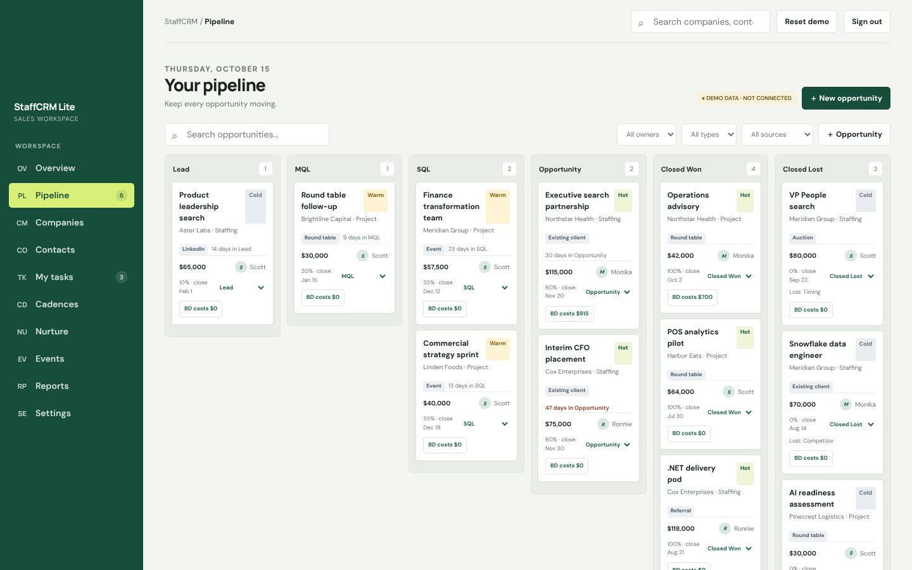
What it shows
- Value as a low–high range until the deal is priced; probability by stage
- Hot / warm / cold score, lead source chip, days in stage
- Filters for owner, type and lead source
- BD cost tracking per opportunity
Try this
- Change Finance transformation team from SQL to Opportunity and watch the toast: a follow-up task is created
- Move a deal to Closed Lost: a loss reason is required
- Filter All sources → Round table
Companies
ScottEvery account in one place, keyed by web domain, with its people, deals, stage history and a timeline of every touch.
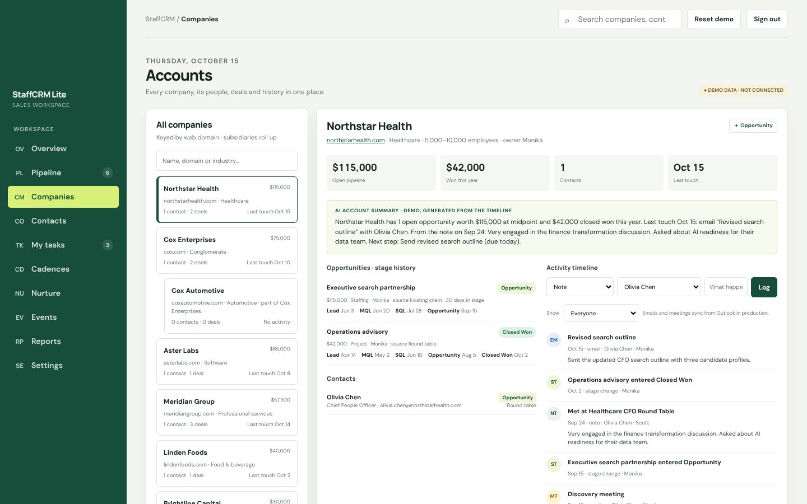
What it shows
- Parent and subsidiary roll-up (Cox Automotive under Cox Enterprises)
- Opportunities with full stage history and days in stage
- Timeline of emails, meetings, calls, LinkedIn messages, notes and stage changes; filter by person
Try this
- Open Companies → Cox Enterprises to see the roll-up
- Log a note in the timeline and watch the summary update
- Filter the timeline to one contact
LinkedIn capture with ZoomInfo
ScottPaste a LinkedIn profile URL and ZoomInfo fills in the person and creates the company.
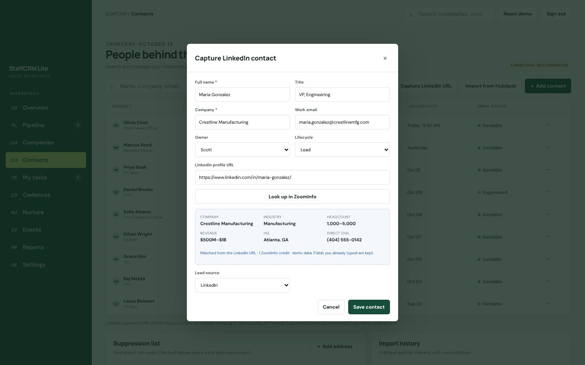
What it shows
- Name, title, work email and company filled from ZoomInfo
- Company created with industry, headcount and description
- Lead source set to LinkedIn automatically
Try this
- Open Contacts → Capture LinkedIn URL
- Paste any profile URL and select Look up in ZoomInfo
- Save, then find the new company under Companies
My tasks and the work queue
ScottOverdue, today and upcoming tasks, plus a queue that opens each task as an email, one at a time.
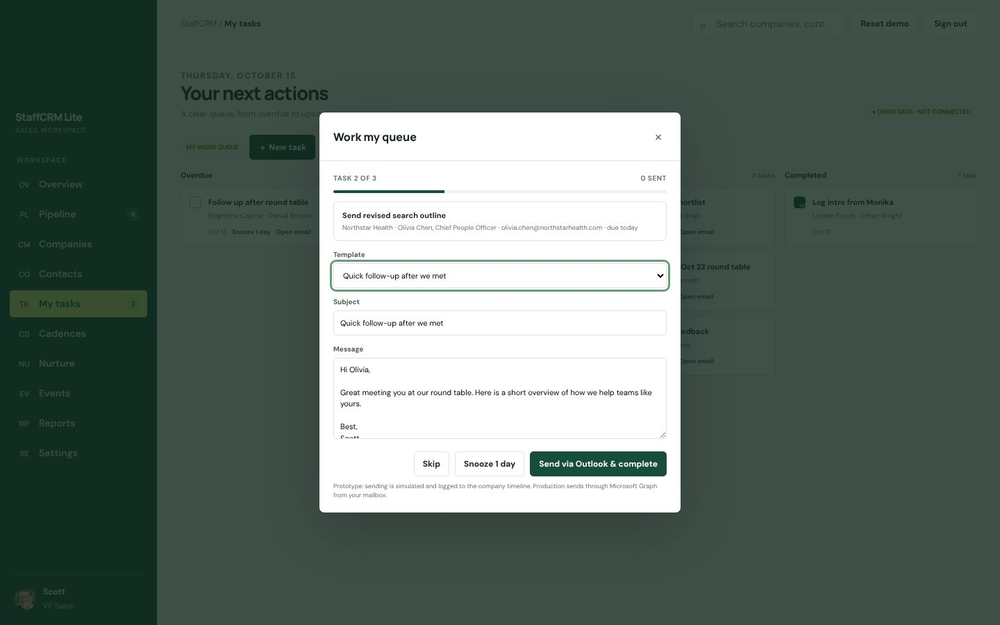
What it shows
- Overdue / Today / Upcoming / Completed columns with snooze
- Templates from the shared content library and cadences
- Your email signature from Settings
Try this
- Open My tasks → Work my queue
- Leave the tasks ticked and select Start
- Pick a template, then Send via Outlook & complete
Cadences
ScottShort sequences of 3–5 emails that stop the moment someone replies, bounces or unsubscribes.
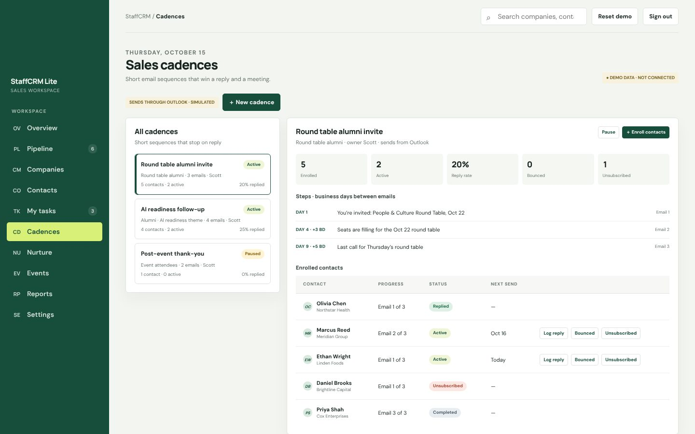
What it shows
- Round table alumni invite, AI readiness follow-up, post-event thank-you
- Steps with business-day gaps; reply rate, bounces, unsubscribes
- Enrolled contacts with their next send date
Try this
- Select Log reply on an active contact: they leave the cadence and a task is created
- Select Unsubscribed: they join the suppression list
- Use Enroll contacts; suppressed people can’t be picked
Nurture and content library
Stephen or ScottA monthly content drop for leads nobody is actively working, from one library shared with cadences.
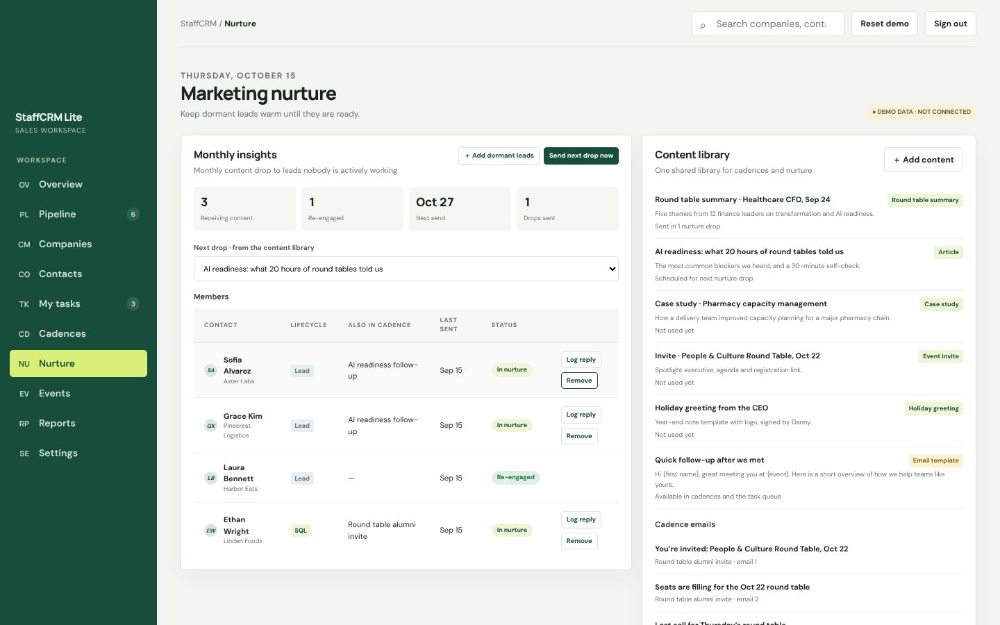
What it shows
- Members can also be in a cadence at the same time
- Next drop chosen from the library
- Round table summaries, case studies, invites, holiday greeting, email templates
Try this
- Select Log reply on a member to re-engage them
- Select Add dormant leads to see suggested leads
- Select Send next drop now (simulated)
Event calendar
RyanAtlanta and Southeast events from Marketing in one calendar, with who is going and email reminders.
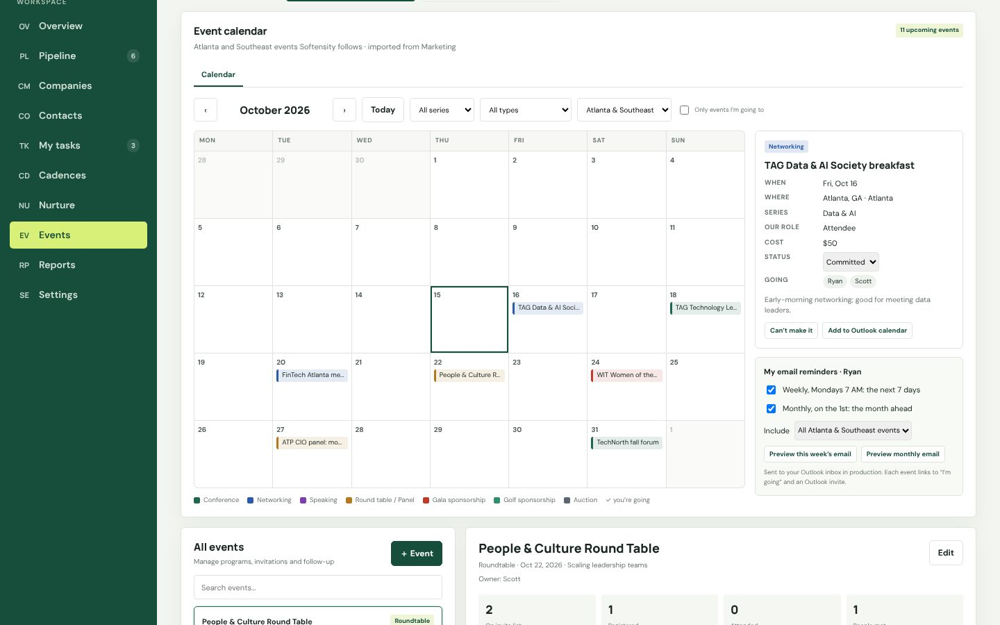
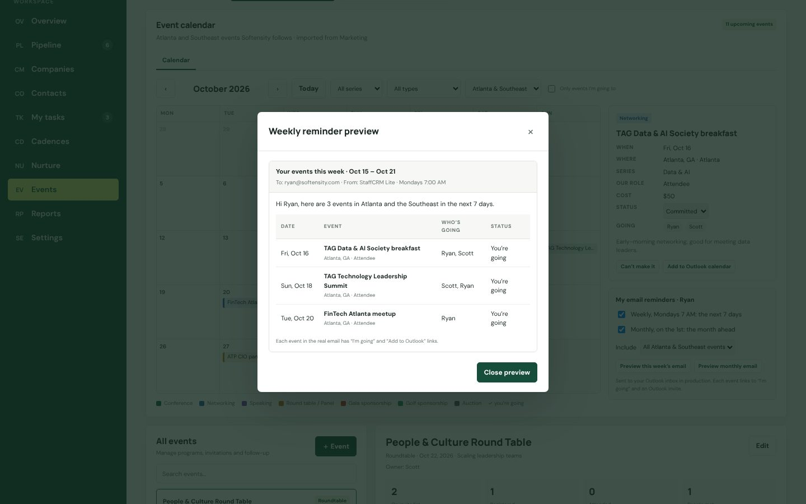
What it shows
- TAG, WIT, ATP, Fintech, TechNorth, Data & AI, Techbridge golf and Softensity round tables
- Role (attendee, speaker, moderator, sponsor), cost, status, who is going
- Filters for series, type, region and “only events I’m going to”
Try this
- Sign in as Ryan and open Events
- Select an event, then I’m going or Add to Outlook calendar
- Select Import events from Marketing to see Stephen’s CSV import
Leadership reports
DannyMonika’s three Tier 1 dashboards, plus lead source ROI and BD investment, for the leadership group.
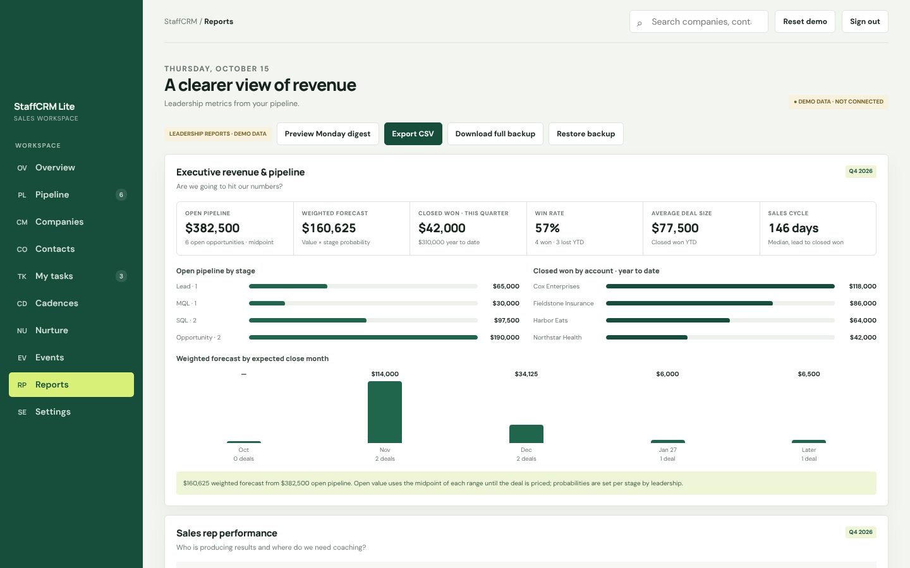
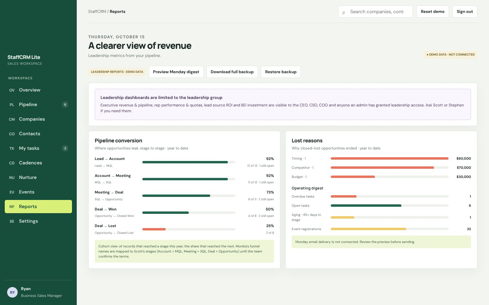
What it shows
- Executive revenue & pipeline, sales rep performance with quota attainment
- Pipeline conversion stage to stage, lost reasons, operating digest
- Lead source ROI and BD investment against won deals
Try this
- Sign in as Danny and open Reports
- Select Preview Monday digest
- Sign in as Ryan: the leadership panels are replaced by a locked card
Event budget and ROI
DannyWhere to spend the marketing budget next, based on what each event series has returned.
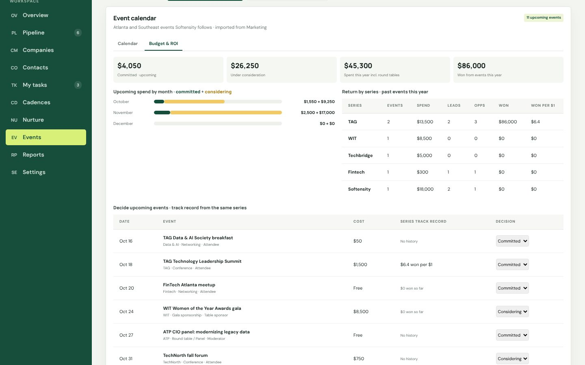
What it shows
- Return by series (e.g. TAG’s won value per dollar spent)
- Each upcoming event shows its series’ track record
- Past events traced to leads, opportunities and won deals
Try this
- As Danny, open Events → Budget & ROI
- Change an event from Considering to Committed
- Create an opportunity with a Source event to link it
Settings and Admin
Scott or StephenEveryone has Settings; admins also onboard and offboard people and decide who sees leadership views.
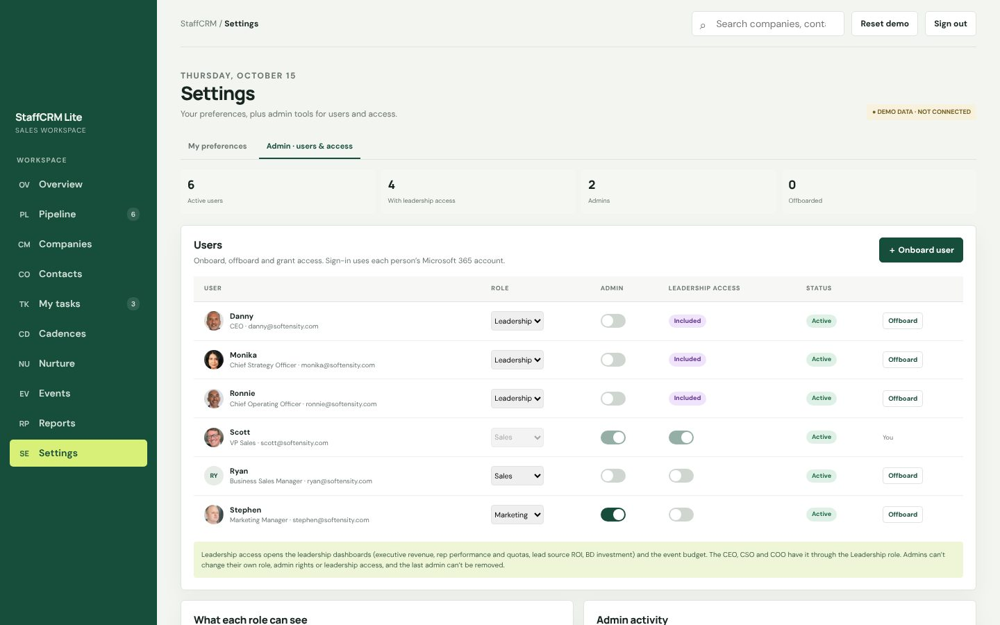
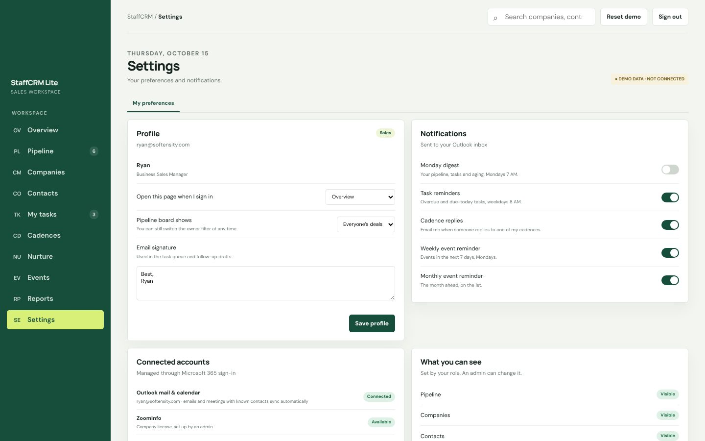
What it shows
- Onboard: role, quota, admin, leadership access, welcome email
- Offboard: reassign deals, contacts, tasks and cadences in one step
- Role access matrix and own-vs-all records
Try this
- As Scott, open Settings → Admin and select Onboard user
- Sign out: the new person is on the sign-in screen
- Offboard someone and check the activity log
On a phone
EveryoneThe same prototype works on a phone, so Ryan can check events and capture notes on the floor.
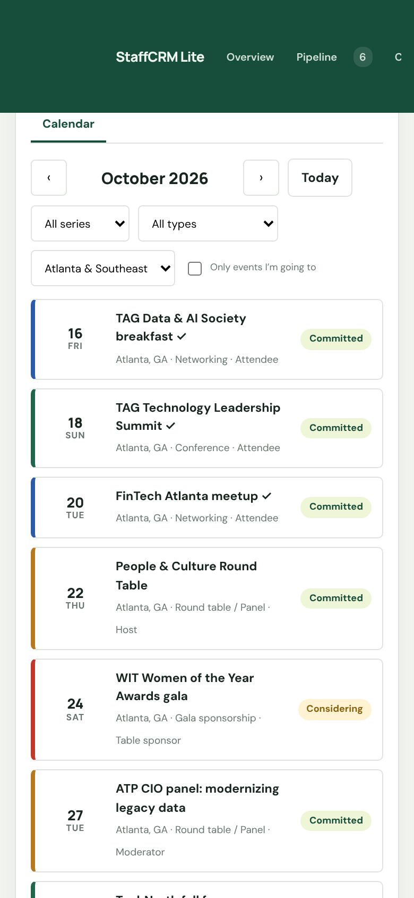
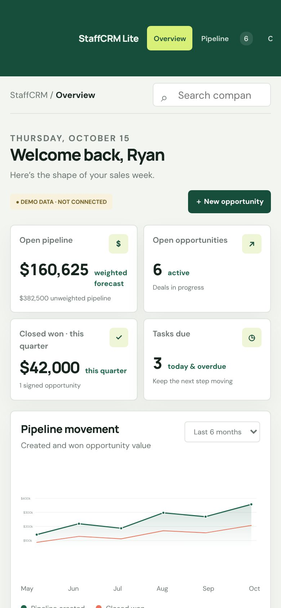
Who sees what
Leadership views are limited to the CEO, CSO and COO plus anyone an admin grants. Scott and Stephen are the admins. These are the prototype’s defaults; admins can change them.
| Person | Role | Admin | Leadership dashboards & event budget | Everything else |
|---|---|---|---|---|
| Danny · CEO | Leadership | — | Yes | All areas |
| Monika · CSO | Leadership | — | Yes | All areas; reviews event photos |
| Ronnie · COO | Leadership | — | Yes | All areas |
| Scott · VP Sales | Sales | Yes | Granted | All areas |
| Stephen · Marketing Manager | Marketing | Yes | No | All except Pipeline |
| Ryan · Business Sales Manager | Sales | — | No | All areas |
Requirements covered
Every requirement gathered so far has a home in the prototype. “Working” means it behaves as it would in production; “Simulated” means the screen and flow are real but the outside connection is faked.
| Requirement | From | Where to find it | Prototype |
|---|---|---|---|
| Pipeline board, lifecycle stages, owner assignment | Scott · Pillar 1 | Pipeline | Working |
| Lead scoring and lead source | Scott · Pillar 1 | Pipeline, Contacts, Reports | Working |
| Stage timestamps, deal value & probability | Scott · Pillar 1 | Pipeline, Companies | Working |
| Notes and Outlook history | Scott · Pillar 1 | Companies timeline | Simulated |
| Lead capture from LinkedIn / ZoomInfo | Scott · Pillar 1 | Contacts → Capture LinkedIn URL | Simulated |
| Next-action reminders | Scott · Pillar 1 | Auto task on every stage change | Working |
| Sales cadence, auto-remove on reply / unsubscribe | Scott · Pillar 2 | Cadences | Simulated |
| Marketing nurture and content library | Scott · Pillar 3 | Nurture | Simulated |
| Task board and email queue | Scott · Pillar 4 | My tasks → Work my queue | Working |
| Companies as records, Closed Won / Lost, loss reasons | Scott · Pillar 5 | Companies, Pipeline | Working |
| HubSpot migration | Scott · Pillar 5 | Contacts → Import from HubSpot (preview) | Simulated |
| Suppression list (legal) | Scott · Foundations | Contacts, Cadences, Queue | Working |
| Permissions & visibility | Scott · Foundations | Settings → Admin | Working |
| Backups & export | Scott · Foundations | Reports → Download full backup | Working |
| Executive revenue & pipeline | Monika · Tier 1 | Reports | Working |
| Sales rep performance with quota attainment | Monika · Tier 1 | Reports | Working |
| Pipeline conversion and lost reasons | Monika · Tier 1 | Reports | Working |
| Event calendar and email reminders | Ryan | Events | Simulated |
| Event import from Marketing | Stephen | Events → Import events from Marketing | Working |
| Marketing budget and event ROI | Danny | Events → Budget & ROI | Working |
| Onboard / offboard users, leadership access | Scott & Stephen | Settings → Admin | Working |
| Round table registration import (Janium) | Sessions | Events → Import registration sheet | Simulated |
Still open from Scott’s list (Phase 3): custom fields, open and click tracking, automated data-hygiene checks.
Prototype vs production build
The screens carry over to production unchanged; what changes is that the data becomes shared and the connections become real.
| Area | In the prototype | In production |
|---|---|---|
| Sign-in | Pick a person | Microsoft 365 single sign-on (Entra ID); admins add people to a StaffCRM group |
| Data storage | Saved in your own browser only | Azure Database for PostgreSQL shared by the whole team, with nightly backups |
| Email and meetings | Sample timeline entries | Outlook mail and calendar sync through Microsoft Graph for known contacts |
| Sending email | Logged, not sent; drafts can open in Outlook | Sent from each person’s own mailbox; replies and bounces stop cadences automatically |
| ZoomInfo | Sample company returned | ZoomInfo API (search free, enrich on save) or CSV if the license has no API |
| URL capture | URL capture plus Janium exports; no LinkedIn profile API is available | |
| AI account summary | Assembled from the timeline | Azure OpenAI in the firm’s own tenant; nothing sent without approval |
| Reminder and digest emails | Previews only | Scheduled emails on Mondays and the 1st of the month |
| HubSpot and Janium imports | Previews and sample rows | Real imports with matching on email, LinkedIn URL and company domain |
Plan and cost
With approval by Oct 30, Phase 1 runs Nov 2 – Dec 31, both systems run in parallel in early January, and HubSpot can be canceled around Jan 18, 2027.
| Phase | When | Scope | Effort (hours) |
|---|---|---|---|
| Prototype | Done | Everything in this guide | — |
| Phase 1 | Nov 2 – Dec 31 | Production build of all “Working” and “Simulated” items, Outlook, ZoomInfo, HubSpot migration | 780–970 |
| Parallel run & cutover | Jan 4 – Jan 18 | Reconcile migrated data, verify Outlook sync for every user, Monika signs off dashboards | incl. |
| Phase 2–3 | Jan – Mar 2027 | Custom fields, open/click tracking, data hygiene, Zoho recruiting handoff | 400–560 |
Phase 1 is up from the original 700–850 hours because the event calendar, event budget and admin controls joined the scope. Run cost is unchanged: about $2.5–5K a year for Azure hosting plus $0.3–1K for AI, against about $15K a year for HubSpot. These are estimates to confirm with the Azure pricing calculator. Full detail is in the original proposal.
Decisions needed
Most of these can be settled in the demo itself.
- Approve the production build, and decide who builds it: the firm’s developers, Errol, or both.
- Confirm the HubSpot renewal date, which sets the cutover deadline.
- Pick the stage names: Scott’s (Lead, MQL, SQL, Opportunity) or Monika’s (Lead, Account, Meeting, Deal); keep or drop “SQL Potential”.
- Confirm who gets leadership access beyond the CEO, CSO and COO, and whether Marketing should see the Pipeline.
- Agree who approves event spend in Budget & ROI, and any dollar threshold.
- Confirm Stephen’s event list can be exported as CSV in the template’s columns.
- Confirm the ZoomInfo license includes API access.